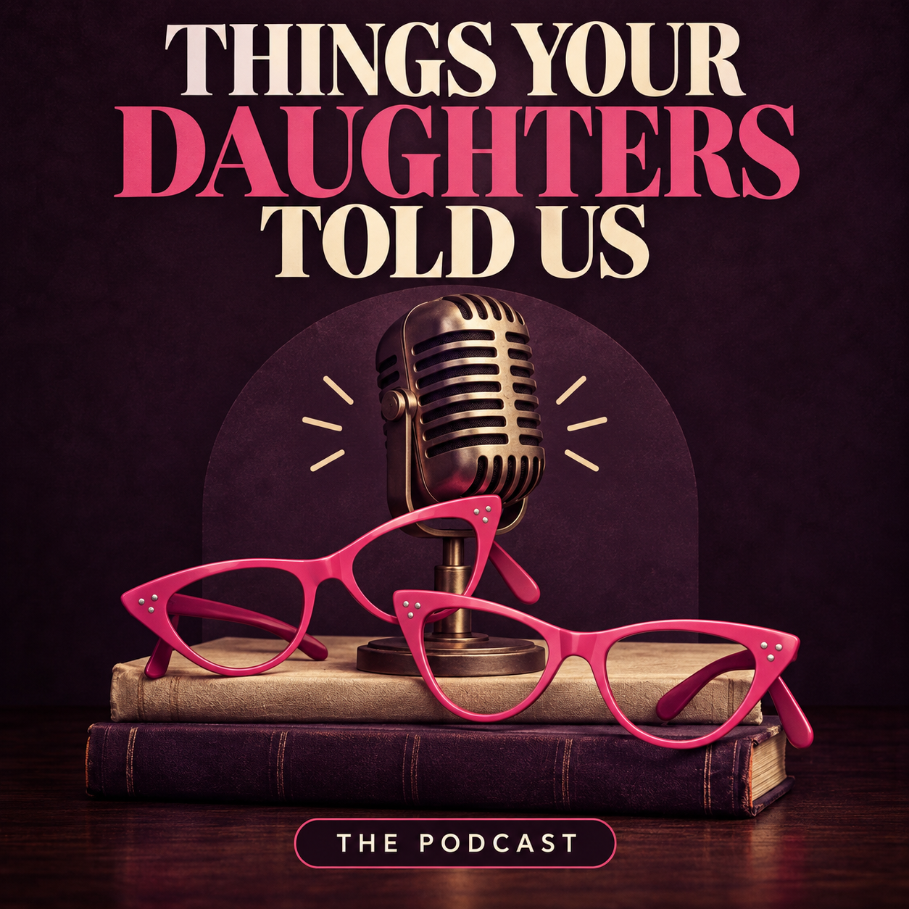

Keynotes
Consent in the real world
Typical range: $3,500-$5,000
A 60-90 minute anchor talk for campuses, conferences, schools, and community events that need consent, boundaries, and communication to feel human, memorable, and usable.
Public speaking & workshops
Drs. Beth Savage and Virginia Cylke bring a combined 55 years of teaching and mentoring into clear, compassionate programs for schools, campuses, parent groups, and community audiences.
The work
Consent education lands when it respects the intelligence of the room. These programs make space for pressure, culture, digital life, relationships, accountability, and the questions people are often afraid to ask out loud.
Services offered
Most speaking engagements fall between $2,500 and $7,500, depending on format, travel, session count, and audience needs.
Keynotes
Typical range: $3,500-$5,000
A 60-90 minute anchor talk for campuses, conferences, schools, and community events that need consent, boundaries, and communication to feel human, memorable, and usable.
Workshops
Typical range: $2,500-$3,500
Interactive sessions for smaller groups, with scenarios, practical language, boundary-setting, repair, and guided practice that can be tailored for students, parents, or staff.
Community
Typical range: $2,500-$4,000
Supportive, nonjudgmental evening programs for adults who want better questions, less panic, and clearer ways to talk with young people about sex, consent, and relationships.
Live format
Typical range: $5,000-$7,500
A moderated live conversation, Q&A, or keynote-plus-dialogue event that brings the tone of Things Your Daughters Told Us into the room and can tie back to the podcast afterward.
Who it is for
Student-facing programs about consent, peer pressure, and communication.
Practical guidance for talking with young people without shutting them down.
Shared language for supporting students and responding with steadiness.
Values-forward conversations for teams that want clearer norms and boundaries.

The podcast
The podcast extends the same spirit as the speaking work: candid, warm, curious conversations about what people are learning, unlearning, and finally saying out loud.
Use the show as a follow-up resource after an event, or build a live campus conversation around the themes listeners are already bringing to the hosts.
Hosts and speakers
Beth brings the instincts of a teacher, mentor, and careful listener to rooms where people need honest language and a clear path into complicated conversations.
Virginia brings practical classroom experience, curiosity, and a steady sense of humor to consent education that people can actually talk about.
Speaking inquiries
Tell us about your audience, preferred date, location or virtual format, and the kind of conversation you want to make possible. Speaking engagements typically begin at $3,500, with custom quotes for workshops, multi-session programs, travel, and live podcast-style events.
Send a speaking note through Instagram and include event timing, audience, format, and topic goals.
Inquire on Instagram